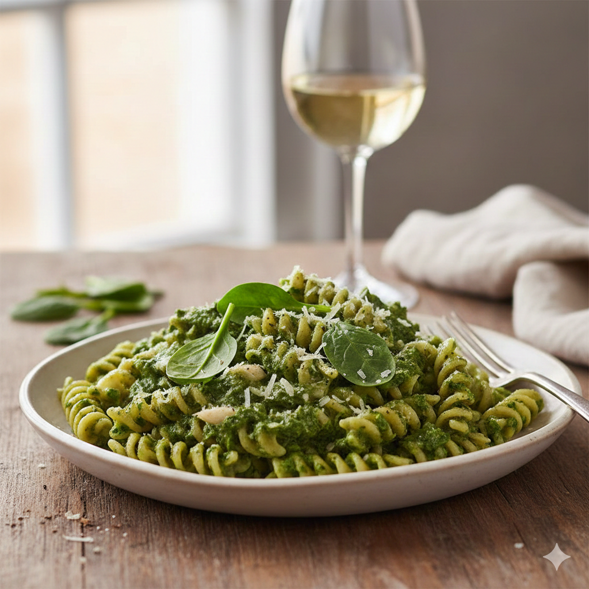

Home
Creamy spinach pasta

Description
This pasta with fresh spinach and creamy Gorgonzola sauce is one of those super quick recipes that can be ready in about 20 minutes. Use any kind of pasta and serve.
Ingredients
- 1 (16 ounce) package fusilli pasta
- 1 tablespoons butter
- 2 shallots, minced
- 1 cup heavy whipping cream
- 4 cups fresh spinach
- 1/2 cup Gorgonzola cheese
- salt and freshly ground black pepper to taste
Steps
- Bring a large pot of lightly salted water to a boil. Cook fusilli in boiling water, occasionally stirring, until tender yet firm to the bite, about 12 minutes.
- In the meantime, melt butter in a skillet over medium heat and cook shallots until soft and translucent, 3 to 5 minutes. Pour in cream and cook until heated through, 3 to 5 minutes. Add spinach and crumble in Gorgonzola cheese. Season with salt and pepper and cook until spinach is wilted and sauce has thickened, about 4 minutes.
- Drain fusilli and toss with sauce. Serve immediately.